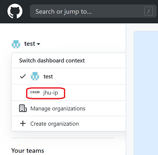

This is an in-class exercise. An exercise page like this one will contain a brief description but is intended to be supplemented by discussion during our meeting time. Complete the exercise to the best of your ability in the time given. Feel free to talk with other students as you work, and do not be afraid to ask questions if you get stuck. Aim to complete as much as possible during our meeting, but you need not hand it in. You are encouraged to work at home to complete what you do not get through today.
If you are new to the course and need a temporary cs account, make a private post on Piazza to instructors with subject "Request for a cs temp account". You should also do Exercise 3-B after you complete Parts 1-5 below.
Learning Objectives
This exercise will help you gain additional familiarity with:
- Unix/Linux commands
- git
- text editor emacs (or vim)
and introduces:
- zip tool for bundling files in Unix/Linux
- file transfer tool scp to move files from ugrad to your local machine.
Part 1
Log into the ugrad system, stay in your home directory, and configure git within your ugrad account:
1. Type the command:
git config --global user.name "Your Name"
Be sure to use your actual name inside the quotes.
2. Type the command:
git config --global user.email you@somewhere.com
Be sure to use your actual email address.
3. Type the command:
git config --global credential.helper store
This will make it so that you don’t have to keep retyping your password every time you do a git command.
Note: If you have a Mac you might want to do this in your Terminal later if you want to keep a local copy of your git repo there too. If you're on Windows, you can do the same thing through Git Bash.
Part 2
Configure either a GitHub Authentication Token (recommended) or setup a GitHub SSH key. Instructions are available here
Part 3
Set up your own personal git repository:
1. After completing the form from Exercise 1, you should have received (and accepted) an invitation email to join the course Github organization. When you login to your Github, you should be able to see personal repo with the name YEAR-TERM-student-JHED where YEAR and TERM correspond to this semester and JHED is your actual JHED name. This will serve as your private space from here on
that you will use for your exercises and homeworks. Only you and the course staff have access to your private repo.
You probably need to change to the course organization (i.e. jhu-ip) on the left menu as follows:

where instead of test, you should see your own Github user name.
2. Now, clone your new (empty) repository into your home directory on ugrad using the https: version of the command given when you click the Code button (a green button) in the menu on the right, and then select Use HTTPS. Copy the repository url into clipboard and type command:
git clone URL
where URL is replaced by the repo url you copied into the clipboard.
Unless you have configured an SSH key for your Github account,
you should use the https Github URL, not the ssh Github URL.
If you get an "authentication failed" error, it means you need to generate a personal access token on Github and use that instead of your password. Follow the steps in Part 2 of this exercise to make it happen!
Part 4
Create a file on ugrad and add it to the repository:
1. Use cd to move into your YEAR-TERM-student-JHED folder (your cloned copy of your repository). Use pwd to check that you are in the right place.
2. Use a text editor (emacs or vim) to create a new text file called README there. Put your name, JHED, class year, and major(s)/minor(s) in your README.
3. Type the command git status to see what it reports.
4. Add your README file to your repository using the command git add README.
5. Type the command git status to see what it reports.
6. Commit your README file to your repository using git commit -m "created README".
7. Type the command git status to see what it reports.
8. Send these local changes up to the github repo using git push.
9. Type the command git status to see what it reports.
10. Type the command git log to see what it reports.
11. Edit your README file, and within the file, add a line saying that this is your personal repository for Intermediate Programming at JHU along with your current semester and section number.
12. Check the status again with git status, then commit your updated README using git commit -am "updated README".
The -a flag commits all changes to previously added files.
Now, push your changes using git push. Finally, check your git log again to see how it has changed. (That is, type the command git log to see what it reports.)
13. In your web browser, investigate what has changed in the remote repo on github.com.
Part 5
Prepare your files as if you were asked to submit them to Gradescope for a homework assignment (but you don’t need to submit them today) - consider this a trial run for turning in an assignment later on. Suppose that an assignment asks you to turn in your new README file, along with a copy of your git log, to show how you have been using git during the assignment.
1. Save a copy of your git log to a text file by typing the command git log > gitlog.txt.
2. Use zip as indicated below to bundle/compress your repository into a .zip file named ex03.zip. The command should look something like: zip ex03.zip README gitlog.txt. Note that the first argument after zip is the name of the .zip file to create; the remaining arguments are the files or folders to bundle together.
3. Use cd ~ or just cd to move into your home directory.
4. Now move (the command mv means move, rather than copy) your .zip file to your current location using the following command: mv YEAR-TERM-student-JHED/ex03.zip . (again, replacing YEAR, TERM, and JHED with the proper values.) Note that the . in the command above indicates that the desired destination is your current working directory.
5. Check to make sure your .zip file contains the right files with unzip -l (this says to list the files that would come out if you were to unzip the bundle) as indicated below: unzip -l ex03.zip. This will cause a list of the files and directories in your zip file to be displayed on the screen. It is your chance to double-check that you have included everything. If you wanted to actually unzip your bundled files (though you do not need to do so now), you could use the unzip command as above, but without the -l flag. You will often want to unzip your file in a folder which is different than the one where you created it, to avoid overwriting your original README and gitlog.txt files.
6. Now that all required files are bundled together as one .zip file, you will need to copy the bundle from ugrad to your local machine. Our tools for accomplishing this will be scp (Mac, Linux, or Windows Powershell), or either pscp or WinSCP if installed on Windows.
In a terminal on your local computer, copy your .zip file from ugrad to your local computer using scp <source> <destination>. For example, if you are a user named ips21004 connected to ugradx using a Mac, open a new Terminal window on your Mac (not the one in which you are connected to ugradx!), navigate to the folder into which you want the file to be copied and type: scp css22004@ugradx.cs.jhu.edu:ex03.zip .. The source argument above first indicates in what account and on what machine you want to look, then, after the colon, it indicates a relative path from your home directory. The destination argument, however, is simply a dot, because you are typing this command on your Mac and want the file to be transferred to the folder on your Mac that you are currently working in. So, there is no need to specify the destination machine; it is the local one by default.
Do not try to type a ./ after the colon to start the relative path name, or a ~/ to indicate an absolute path name; scp will not understand that notation.
You will need pscp here which should have been installed already automatically when you installed Putty. Copy your .zip file from ugrad to your local computer using pscp <source> <destination>. For example, you could open a Command Prompt window or Powershell and type pscp css22006@ugradx.cs.jhu.edu:ex03.zip .. If you're using Git Bash instead, you can run scp instead of pscp. For Windows where WinSCP has been installed: connect to ugradx using the WinSCP interface and drag the ex03.zip file from the ugradx side to your local computer's side.
7. If you wanted to submit this on Gradescope (which we are not actually doing today), you now have a copy of your .zip file on your local computer, and could launch a web browser that will allow you to select the file you wish to upload to Gradescope.
Part 6 (if time permits)
Work through at least one emacs (or vim) tutorial on the course Resources page. NOTE: whether or not you get to work on it during today’s exercise, you are expected to complete a tutorial for one of the two editors before you come to our next meeting. In fact, we recommend completing several; the more times you practice the commands, the quicker you will learn them.